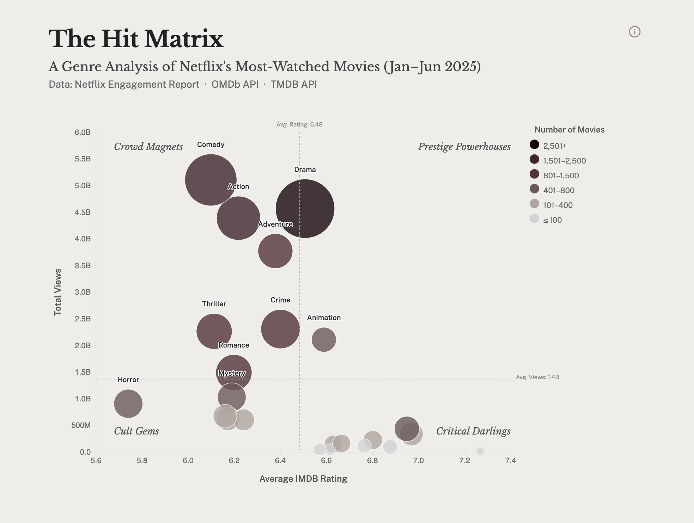
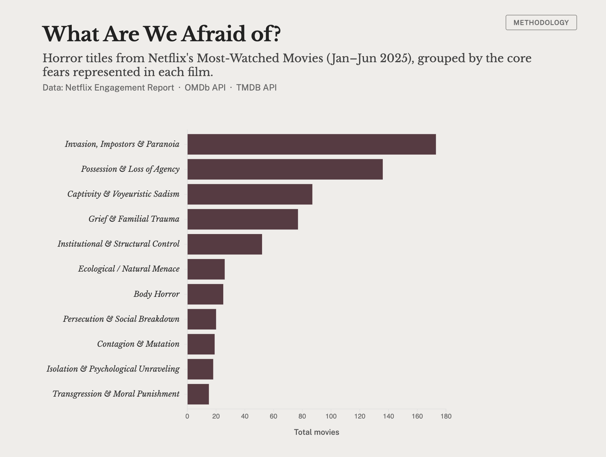
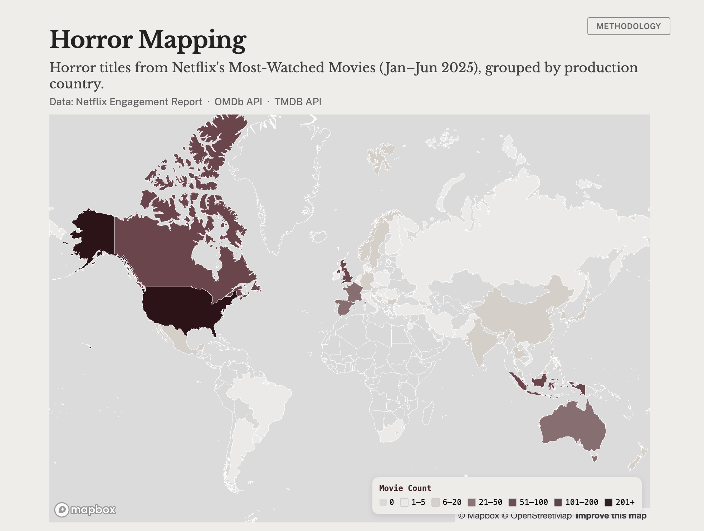

Horror films are a cultural barometer: capturing, distorting, and projecting collective fears back to us. Using Netflix’s Engagement Report for January to June 2025, this project examines what the platform’s most-watched horror titles reveal about the anxieties shaping contemporary popular culture.
See live site ↗Netflix’s Engagement Report (Jan–Jun 2025) captures aggregate viewing across all genres on the platform. The challenge was to move beyond this broad distribution and surface more specific, interpretable patterns within it: not just what is watched, but what kinds of narratives and themes dominate attention.
The horror genre serves as a focused entry point for this analysis. From a cultural perspective, it translates diffuse tensions and anxieties into recognizable narrative forms, making it particularly suited for structured analysis. From an industry perspective, horror has grown from a niche genre into one of the most commercially significant categories in contemporary film, accounting for a record 17% of North American ticket sales in 2025.
The project approaches horror as a cultural barometer, treating a large set of popular titles as a corpus through which contemporary fears can be mapped, compared, and grouped.
At its core is a classification system that assigns each film a primary fear category, allowing the analysis to move from individual titles to a broader structure of recurring themes.
Film metadata was compiled from Netflix’s Engagement Report and enriched through OMDb, IMDb, and TMDB. Each title was then classified by core fear using a hybrid workflow: a local LLaMA-3 8B model run via Ollama, prompted with the film’s title, synopsis, and keywords, and guided by a manually designed taxonomy.
Model outputs were then manually reviewed and refined. Categories were consolidated into three higher-order supergroups reflecting broader dimensions of recurring fears.
The project opens with a hit matrix comparing all genres by total views and IMDb rating, situating horror within a larger field of popular film consumption. It then narrows to horror itself, showing which fear categories dominate the genre, which patterns recur across subgroups, and how titles are distributed geographically.


